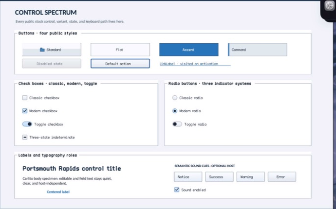

class · visual
GroupBox
GroupBox is a titled Panel specialization with validated typography, mnemonic focus routing, caption-aware border painting, and group semantics.
Visual evidence

Ownership and hierarchy
- Hierarchy
- Panel → GroupBox
- Declaration
- include/gui_forms/controls/panel/group_box/group_box.hpp:9
- Definition
- src/controls/panel/group_box/group_box.cpp
Declared methods
GroupBox public
explicit GroupBox(StableId stable_id, std::string text =Constructs a Panel with authored caption text and the control-caption font policy.
text public
[[nodiscard]] const std::string& text() const noexceptReturns the authored caption including any mnemonic marker.
set_text public
void set_text(std::string text)Commits caption text and invalidates measurement, painting, and semantics only for a real change.
font public
[[nodiscard]] FontSpec font() const noexceptReturns the explicit caption FontSpec.
set_font public
void set_font(FontSpec font)Validates and commits the caption font, then invalidates size, paint, and semantics.
use_mnemonic public
[[nodiscard]] bool use_mnemonic() const noexceptReports whether ampersand mnemonic parsing and focus routing are enabled.
set_use_mnemonic public
void set_use_mnemonic(bool value)Toggles caption mnemonic interpretation and invalidates affected retained phases.
on_paint public
void on_paint(Painter& painter, Rect local_damage) overridePaints the Panel material and a caption-aware border gap before recording the caption text.
semantic_descriptor public
[[nodiscard]] SemanticDescriptor semantic_descriptor() const overrideProjects the group role and uses the displayed caption as the accessible name when no explicit name exists.
mnemonic_matches private
[[nodiscard]] bool mnemonic_matches( char32_t character) const noexcept overrideReports the current mnemonic matches value without mutation.
process_mnemonic_self private
bool process_mnemonic_self(char32_t character) overrideExecutes GroupBox's process mnemonic self operation against retained state; the signature records its exact inputs, result, constness, and failure surface.